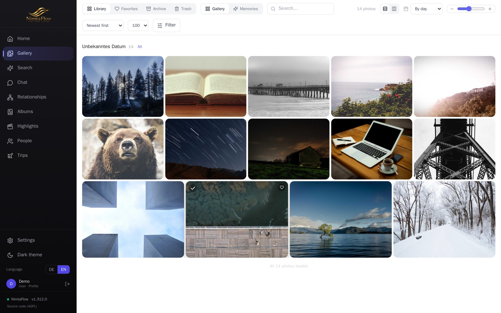
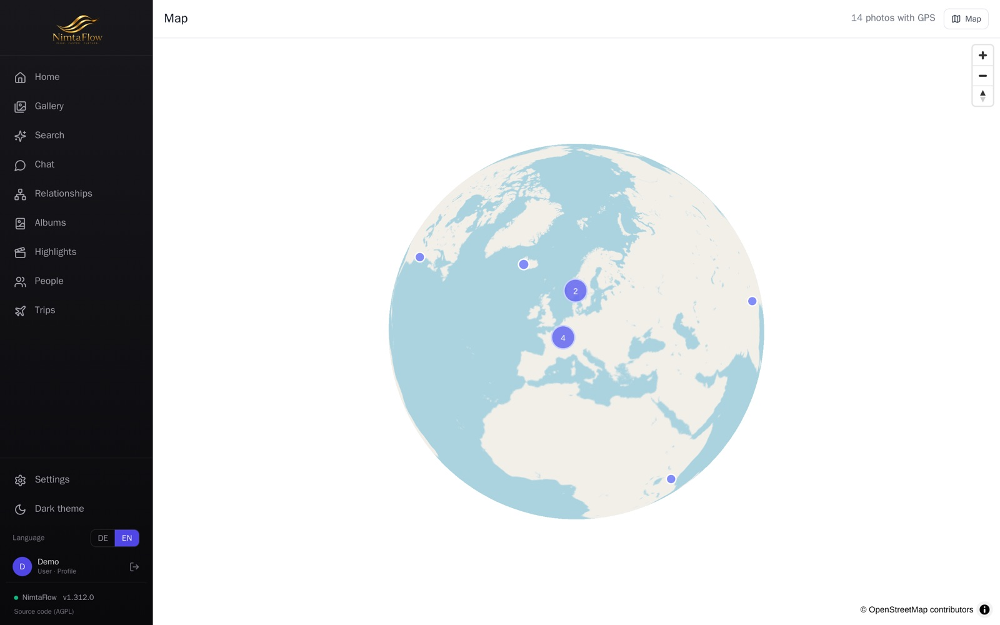
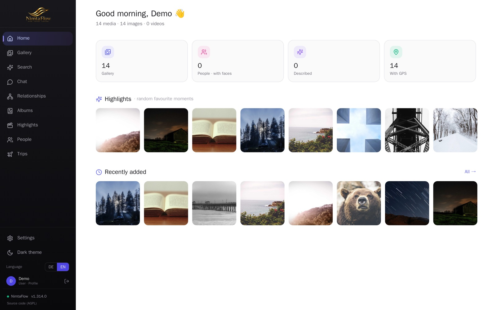

Verwalte deine Fotos & Videos auf deiner eigenen Hardware — mit KI-Suche, Gesichtserkennung, Karte und Erinnerungen. Kein Abo, kein fremder Cloud-Anbieter, keine Auswertung deiner Daten. Web-Oberfläche und native iOS-App.
Open Source · iOS-App in Vorbereitung für den App Store
Große Foto-Dienste leben von deinen Daten. NimtaFlow dreht das um: alles läuft auf deinem Server, Originale bleiben unangetastet, und moderne Features bekommst du trotzdem.
Läuft per Docker auf Heimserver, NAS oder Mini-PC. Deine Fotos verlassen dein Netzwerk nicht.
Kein Tracking, keine Werbung, kein Datenverkauf. Optionale KI nur per Opt-in und nur für das gewählte Bild.
Schnelle Galerie, Caching, flüssiges Blättern, Web + App aus einer Quelle.
Von der automatischen Indexierung bis zur KI — übersichtlich, schnell, auf deinem Server.
Beliebig viele beobachtete Ordner mit automatischem Re-Scan. Originale werden nur gelesen, nie verändert.
Finde Fotos in natürlicher Sprache. Frag deine Mediathek im Chat — optional, lokal oder per KI-Anbieter.
Automatische Gesichtserkennung & Gruppierung mit Bestätigungs-Vorschlägen und Familien-Graph.
Sieh auf der Karte, wo deine Aufnahmen entstanden sind — inklusive Reisen & Routen.
„Heute vor X Jahren", automatische Rückblick-Videos und „Foto animieren" — KI-Clips aus Bildern.
Native App mit Galerie, Suche, Karte, Chat — plus Upload (manuell & automatisch) in deinen eigenen Ordner.
Mehrere Konten mit feiner Zugriffssteuerung: Ordner, Personen, Datumsbereiche, Funktions-Schalter.
Komplette Oberfläche in Deutsch & Englisch — automatische Erkennung plus manueller Umschalter.
Server & App sind quelloffen. Transparent, anpassbar, selbst betreibbar — keine Blackbox.
Verbinde Claude, ChatGPT & Co. und durchsuche deine Mediathek in natürlicher Sprache — token-basiert, mit deinen Rechten.
Echte Screenshots aus NimtaFlow — hier mit lizenzfreien Beispielbildern. Dunkles Design, das sich der Tageszeit anpasst, zweisprachig, Web & iOS aus einer Quelle.
Schnelle, flüssige Galerie mit großen Vorschaubildern. Filtern, Favoriten, Auswahl — alles direkt auf deinem Server.

Sieh auf der interaktiven Weltkugel, wo deine Aufnahmen entstanden sind — gruppiert nach Orten, mit Reisen & Routen.

Eine persönliche Startseite mit Begrüßung, Statistiken, Highlights und „Heute vor X Jahren" — jedes Mal frisch zusammengestellt.

NimtaFlow läuft per Docker auf deiner eigenen Hardware. Hol dir den Code von GitHub und starte deine Instanz.
.env.example, setze Passwort & Foto-Pfad.docker compose up -d baut & startet alles.git clone https://github.com/mnimtz/nimtaflow.git
cd nimtaflow
cp .env.example .env
docker compose up -dNimtaFlow ist ein freies Open-Source-Projekt — in der Freizeit entwickelt, ohne Abo und ohne deine Daten zu verkaufen. Wenn es dir gefällt, freuen wir uns über eine kleine Unterstützung. Sie fließt direkt in Entwicklung, Hosting der Demo und neue Funktionen.
💛 Mit PayPal unterstützenVielen Dank! Alternativ hilft auch ein ⭐ auf GitHub.
NimtaFlow ist selbst-gehostet: deine Medien und Daten liegen auf dem von dir bzw. dem Betreiber kontrollierten Server, nicht bei einem Dritt-Dienst.
Kein Tracking, keine Werbung, keine Drittanalyse.
Standardmäßig läuft alles lokal auf dem Server. Optionale KI-Funktionen (Beschreibung, Suche, „Foto animieren") senden nur ein von dir ausgewähltes Medium an einen vom Betreiber konfigurierten KI-Anbieter — und nur, wenn aktiviert. Sind sie aus, verlässt kein Inhalt den Server.
Auskunft, Berichtigung und Löschung über den unten genannten Kontakt.
Kontakt: marcus@nimtz.email · Vollständige Fassung